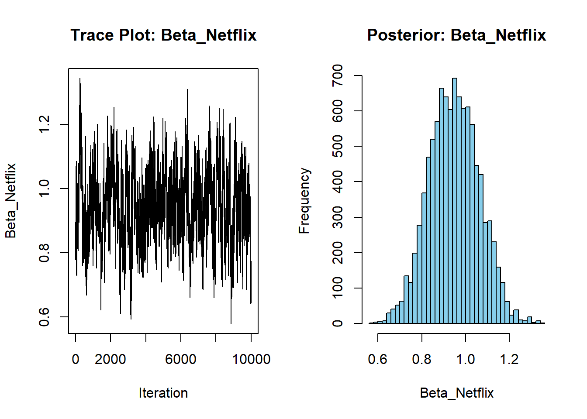

# set seed for reproducibility
set.seed(123)
# define attributes
brand <- c("N", "P", "H") # Netflix, Prime, Hulu
ad <- c("Yes", "No")
price <- seq(8, 32, by=4)
# generate all possible profiles
profiles <- expand.grid(
brand = brand,
ad = ad,
price = price
)
m <- nrow(profiles)
# assign part-worth utilities (true parameters)
b_util <- c(N = 1.0, P = 0.5, H = 0)
a_util <- c(Yes = -0.8, No = 0.0)
p_util <- function(p) -0.1 * p
# number of respondents, choice tasks, and alternatives per task
n_peeps <- 100
n_tasks <- 10
n_alts <- 3
# function to simulate one respondent’s data
sim_one <- function(id) {
datlist <- list()
# loop over choice tasks
for (t in 1:n_tasks) {
# randomly sample 3 alts (better practice would be to use a design)
dat <- cbind(resp=id, task=t, profiles[sample(m, size=n_alts), ])
# compute deterministic portion of utility
dat$v <- b_util[dat$brand] + a_util[dat$ad] + p_util(dat$price) |> round(10)
# add Gumbel noise (Type I extreme value)
dat$e <- -log(-log(runif(n_alts)))
dat$u <- dat$v + dat$e
# identify chosen alternative
dat$choice <- as.integer(dat$u == max(dat$u))
# store task
datlist[[t]] <- dat
}
# combine all tasks for one respondent
do.call(rbind, datlist)
}
# simulate data for all respondents
conjoint_data <- do.call(rbind, lapply(1:n_peeps, sim_one))
# remove values unobservable to the researcher
conjoint_data <- conjoint_data[ , c("resp", "task", "brand", "ad", "price", "choice")]
# clean up
rm(list=setdiff(ls(), "conjoint_data"))Multinomial Logit Model
This assignment expores two methods for estimating the MNL model: (1) via Maximum Likelihood, and (2) via a Bayesian approach using a Metropolis-Hastings MCMC algorithm.
1. Likelihood for the Multi-nomial Logit (MNL) Model
Suppose we have \(i=1,\ldots,n\) consumers who each select exactly one product \(j\) from a set of \(J\) products. The outcome variable is the identity of the product chosen \(y_i \in \{1, \ldots, J\}\) or equivalently a vector of \(J-1\) zeros and \(1\) one, where the \(1\) indicates the selected product. For example, if the third product was chosen out of 3 products, then either \(y=3\) or \(y=(0,0,1)\) depending on how we want to represent it. Suppose also that we have a vector of data on each product \(x_j\) (eg, brand, price, etc.).
We model the consumer’s decision as the selection of the product that provides the most utility, and we’ll specify the utility function as a linear function of the product characteristics:
\[ U_{ij} = x_j'\beta + \epsilon_{ij} \]
where \(\epsilon_{ij}\) is an i.i.d. extreme value error term.
The choice of the i.i.d. extreme value error term leads to a closed-form expression for the probability that consumer \(i\) chooses product \(j\):
\[ \mathbb{P}_i(j) = \frac{e^{x_j'\beta}}{\sum_{k=1}^Je^{x_k'\beta}} \]
For example, if there are 3 products, the probability that consumer \(i\) chooses product 3 is:
\[ \mathbb{P}_i(3) = \frac{e^{x_3'\beta}}{e^{x_1'\beta} + e^{x_2'\beta} + e^{x_3'\beta}} \]
A clever way to write the individual likelihood function for consumer \(i\) is the product of the \(J\) probabilities, each raised to the power of an indicator variable (\(\delta_{ij}\)) that indicates the chosen product:
\[ L_i(\beta) = \prod_{j=1}^J \mathbb{P}_i(j)^{\delta_{ij}} = \mathbb{P}_i(1)^{\delta_{i1}} \times \ldots \times \mathbb{P}_i(J)^{\delta_{iJ}}\]
Notice that if the consumer selected product \(j=3\), then \(\delta_{i3}=1\) while \(\delta_{i1}=\delta_{i2}=0\) and the likelihood is:
\[ L_i(\beta) = \mathbb{P}_i(1)^0 \times \mathbb{P}_i(2)^0 \times \mathbb{P}_i(3)^1 = \mathbb{P}_i(3) = \frac{e^{x_3'\beta}}{\sum_{k=1}^3e^{x_k'\beta}} \]
The joint likelihood (across all consumers) is the product of the \(n\) individual likelihoods:
\[ L_n(\beta) = \prod_{i=1}^n L_i(\beta) = \prod_{i=1}^n \prod_{j=1}^J \mathbb{P}_i(j)^{\delta_{ij}} \]
And the joint log-likelihood function is:
\[ \ell_n(\beta) = \sum_{i=1}^n \sum_{j=1}^J \delta_{ij} \log(\mathbb{P}_i(j)) \]
2. Simulate Conjoint Data
We will simulate data from a conjoint experiment about video content streaming services. We elect to simulate 100 respondents, each completing 10 choice tasks, where they choose from three alternatives per task. For simplicity, there is not a “no choice” option; each simulated respondent must select one of the 3 alternatives.
Each alternative is a hypothetical streaming offer consistent of three attributes: (1) brand is either Netflix, Amazon Prime, or Hulu; (2) ads can either be part of the experience, or it can be ad-free, and (3) price per month ranges from $4 to $32 in increments of $4.
The part-worths (ie, preference weights or beta parameters) for the attribute levels will be 1.0 for Netflix, 0.5 for Amazon Prime (with 0 for Hulu as the reference brand); -0.8 for included adverstisements (0 for ad-free); and -0.1*price so that utility to consumer \(i\) for hypothethical streaming service \(j\) is
\[ u_{ij} = (1 \times Netflix_j) + (0.5 \times Prime_j) + (-0.8*Ads_j) - 0.1\times Price_j + \varepsilon_{ij} \]
where the variables are binary indicators and \(\varepsilon\) is Type 1 Extreme Value (ie, Gumble) distributed.
The following code provides the simulation of the conjoint data.
Note
3. Preparing the Data for Estimation
The “hard part” of the MNL likelihood function is organizing the data, as we need to keep track of 3 dimensions (consumer \(i\), covariate \(k\), and product \(j\)) instead of the typical 2 dimensions for cross-sectional regression models (consumer \(i\) and covariate \(k\)). The fact that each task for each respondent has the same number of alternatives (3) helps. In addition, we need to convert the categorical variables for brand and ads into binary variables.
In order to estimate the Multinomial Logit (MNL) model, we must restructure the conjoint data such that each row represents a single product alternative in a respondent’s choice task, along with the features of that alternative. This also requires converting the categorical variables (brand and ad) into binary indicators. We use netflix and prime as dummy variables for brand (with Hulu as the base/reference category), and an ads dummy indicating whether the offer includes advertisements (with ad-free as the reference). These variables will be the explanatory features in our utility function.
Show code
library(dplyr)
library(knitr)
# Convert brand and ad into dummy variables
data_mnl <- conjoint_data %>%
mutate(
netflix = ifelse(brand == "N", 1, 0),
prime = ifelse(brand == "P", 1, 0),
ads = ifelse(ad == "Yes", 1, 0)
) %>%
select(resp, task, price, netflix, prime, ads, choice)
# Display a formatted preview table
kable(head(data_mnl), caption = "Preview of Prepared Data for MNL Estimation")| resp | task | price | netflix | prime | ads | choice | |
|---|---|---|---|---|---|---|---|
| 31 | 1 | 1 | 28 | 1 | 0 | 1 | 1 |
| 15 | 1 | 1 | 16 | 0 | 0 | 1 | 0 |
| 14 | 1 | 1 | 16 | 0 | 1 | 1 | 0 |
| 37 | 1 | 2 | 32 | 1 | 0 | 1 | 0 |
| 141 | 1 | 2 | 16 | 0 | 1 | 1 | 1 |
| 25 | 1 | 2 | 24 | 1 | 0 | 1 | 0 |
Reshape and prepare data for MNL estimation
This prepared dataset now includes all the variables required for model estimation. The choice variable indicates whether a product was selected in a task (1) or not (0). In the next section, we will use this data to define a log-likelihood function and estimate parameters using Maximum Likelihood.
4. Estimation via Maximum Likelihood
To estimate the parameters of the Multinomial Logit (MNL) model, we define a log-likelihood function that reflects the probability of choosing each alternative. The model assumes that utility is a linear function of product attributes (e.g., brand, ads, price), and that choices are made with some unobserved randomness, modeled as a Type I extreme value error.
We use the optim() function in R with the BFGS optimization method to maximize the log-likelihood and obtain the parameter estimates. The Hessian matrix returned by optim() allows us to compute standard errors and 95% confidence intervals.
Show code
library(dplyr)
library(knitr)
library(tibble)
# Prepare inputs
X <- as.matrix(data_mnl[, c("netflix", "prime", "ads", "price")])
y <- data_mnl$choice
groups <- interaction(data_mnl$resp, data_mnl$task)
# Define the negative log-likelihood function
mnl_loglik <- function(beta) {
xb <- X %*% beta
exp_xb <- exp(xb)
denom <- tapply(exp_xb, groups, sum)
probs <- exp_xb / rep(denom, each = 3)
-sum(log(probs[y == 1]))
}
# Run optimization
init <- rep(0, 4) # initial guess for parameters
fit <- optim(init, mnl_loglik, hessian = TRUE, method = "BFGS")
# Extract parameter estimates and standard errors
coef <- fit$par
se <- sqrt(diag(solve(fit$hessian)))
ci_lower <- coef - 1.96 * se
ci_upper <- coef + 1.96 * se
# Format results
mle_results <- tibble(
Parameter = c("Beta_Netflix", "Beta_Prime", "Beta_Ads", "Beta_Price"),
Estimate = round(coef, 3),
Std_Error = round(se, 3),
CI_Lower = round(ci_lower, 3),
CI_Upper = round(ci_upper, 3)
)
# Show formatted table
kable(mle_results, caption = "Maximum Likelihood Estimates with 95% Confidence Intervals")| Parameter | Estimate | Std_Error | CI_Lower | CI_Upper |
|---|---|---|---|---|
| Beta_Netflix | 0.941 | 0.111 | 0.724 | 1.159 |
| Beta_Prime | 0.502 | 0.111 | 0.284 | 0.719 |
| Beta_Ads | -0.732 | 0.088 | -0.904 | -0.560 |
| Beta_Price | -0.099 | 0.006 | -0.112 | -0.087 |
MLE of MNL Model with 95% Confidence Intervals
The table above presents the estimated coefficients of the MNL model. All signs and magnitudes are consistent with our expectations from economic theory and the data-generating process:
- Beta_Netflix and Beta_Prime are positive, indicating greater preference compared to Hulu (the omitted base category).
- Beta_Ads is negative, showing that offers with advertisements are less attractive.
- Beta_Price is negative, confirming that higher prices reduce the utility of an offer.
The standard errors are relatively small, and the 95% confidence intervals do not cross zero for most parameters, suggesting statistical significance.
5. Estimation via Bayesian Methods
Show code
set.seed(42)
# Log-prior function
log_prior <- function(beta) {
# N(0,5) for first 3, N(0,1) for price
sum(dnorm(beta[1:3], 0, 5, log=TRUE)) + dnorm(beta[4], 0, 1, log=TRUE)
}
# Log-posterior function
log_posterior <- function(beta) {
-mnl_loglik(beta) + log_prior(beta)
}
# Proposal standard deviations
prop_sd <- c(0.05, 0.05, 0.05, 0.005)
# MCMC settings
n_iter <- 11000
n_params <- 4
beta_chain <- matrix(NA, nrow=n_iter, ncol=n_params)
colnames(beta_chain) <- c("netflix", "prime", "ads", "price")
beta_chain[1, ] <- rep(0, n_params) # start at 0
accept <- 0
for (i in 2:n_iter) {
# Propose new beta
beta_prop <- beta_chain[i-1, ] + rnorm(n_params, 0, prop_sd)
# Compute log-posterior
logp_curr <- log_posterior(beta_chain[i-1, ])
logp_prop <- log_posterior(beta_prop)
# Acceptance probability
log_alpha <- logp_prop - logp_curr
if (log(runif(1)) < log_alpha) {
beta_chain[i, ] <- beta_prop
accept <- accept + 1
} else {
beta_chain[i, ] <- beta_chain[i-1, ]
}
}
cat("Acceptance rate:", round(accept/(n_iter-1), 3), "\n")Acceptance rate: 0.569 Show code
# Discard burn-in
burn <- 1000
post_chain <- beta_chain[(burn+1):n_iter, ]
# Trace plot and posterior for Beta_Netflix
par(mfrow=c(1,2))
plot(post_chain[,1], type="l", main="Trace: Beta_Netflix", ylab="Beta_Netflix", xlab="Iteration")
hist(post_chain[,1], breaks=40, main="Posterior: Beta_Netflix", xlab="Beta_Netflix", col="lightblue")
Show code
# Posterior summaries
post_summary <- function(x) {
c(mean=mean(x), sd=sd(x),
lower=quantile(x, 0.025),
upper=quantile(x, 0.975))
}
post_stats <- apply(post_chain, 2, post_summary)
post_stats <- t(round(post_stats, 3))
colnames(post_stats) <- c("Mean", "SD", "2.5%", "97.5%")
knitr::kable(post_stats, caption="Posterior Means, SDs, and 95% Credible Intervals (MCMC)")| Mean | SD | 2.5% | 97.5% | |
|---|---|---|---|---|
| netflix | 0.947 | 0.114 | 0.731 | 1.166 |
| prime | 0.497 | 0.116 | 0.276 | 0.732 |
| ads | -0.737 | 0.088 | -0.902 | -0.564 |
| price | -0.100 | 0.006 | -0.112 | -0.088 |
Metropolis-Hastings MCMC Trace and Posterior for Beta_Netflix
Interpretation of Bayesian Estimation Results
The Metropolis-Hastings MCMC algorithm was used to estimate the posterior distributions of the four model parameters: Beta_Netflix, Beta_Prime, Beta_Ads, and Beta_Price. The trace plot for Beta_Netflix shows good mixing and no obvious trends, suggesting the Markov chain has converged. The histogram displays the posterior distribution, which appears approximately normal.
The posterior summary table reports the mean, standard deviation, and 95% credible intervals for each parameter. These values represent our updated beliefs about the parameters after observing the data and incorporating the specified priors (N(0,5) for binary variables, N(0,1) for price).
Compared to the Maximum Likelihood Estimates (MLE), the posterior means are similar, but the Bayesian approach provides additional uncertainty quantification via credible intervals. This reflects both the information from the data and the prior assumptions. The relatively narrow credible intervals for most parameters indicate the data is informative, while the prior has a modest regularizing effect.
# Trace plot and posterior histogram for Beta_Netflix (first parameter)
par(mfrow = c(1, 2))
plot(post_chain[, 1], type = "l", main = "Trace Plot: Beta_Netflix",
xlab = "Iteration", ylab = "Beta_Netflix")
hist(post_chain[, 1], breaks = 40, main = "Posterior: Beta_Netflix",
xlab = "Beta_Netflix", col = "skyblue")
par(mfrow = c(1, 1))# Combine MLE and Bayesian posterior summaries for comparison
# MLE results (already computed above)
mle_table <- mle_results %>%
select(Parameter, Estimate, Std_Error, CI_Lower, CI_Upper) %>%
rename(
MLE_Estimate = Estimate,
MLE_SD = Std_Error,
MLE_2.5 = CI_Lower,
MLE_97.5 = CI_Upper
)
# Bayesian posterior summaries (already computed as post_stats)
bayes_table <- as_tibble(post_stats, rownames = "Parameter") %>%
mutate(Parameter = c("Beta_Netflix", "Beta_Prime", "Beta_Ads", "Beta_Price")) %>%
rename(
Bayes_Mean = Mean,
Bayes_SD = SD,
Bayes_2.5 = `2.5%`,
Bayes_97.5 = `97.5%`
)
# Merge for side-by-side comparison
comparison <- left_join(mle_table, bayes_table, by = "Parameter")
# Display comparison table
kable(comparison, caption = "Comparison of MLE and Bayesian Posterior Summaries for MNL Parameters")| Parameter | MLE_Estimate | MLE_SD | MLE_2.5 | MLE_97.5 | Bayes_Mean | Bayes_SD | Bayes_2.5 | Bayes_97.5 |
|---|---|---|---|---|---|---|---|---|
| Beta_Netflix | 0.941 | 0.111 | 0.724 | 1.159 | 0.947 | 0.114 | 0.731 | 1.166 |
| Beta_Prime | 0.502 | 0.111 | 0.284 | 0.719 | 0.497 | 0.116 | 0.276 | 0.732 |
| Beta_Ads | -0.732 | 0.088 | -0.904 | -0.560 | -0.737 | 0.088 | -0.902 | -0.564 |
| Beta_Price | -0.099 | 0.006 | -0.112 | -0.087 | -0.100 | 0.006 | -0.112 | -0.088 |
6. Discussion
If we had not simulated the data and were instead analyzing real-world conjoint data, the estimated coefficients from the MNL model would reflect actual consumer preferences. These estimates provide insight into:
The direction of each attribute’s effect on utility
The relative importance of different features (e.g., brand, ads, price)
Trade-offs consumers are willing to make
What does \(\beta_{Netflix} > \beta_{Prime}\) mean? This inequality means that consumers, on average, derive more utility from Netflix than from Prime Video. suggests that, all else equal (price and ads held constant), Netflix is the more preferred brand. This tells us that the probability of choosing Netflix is higher compared to Prime, assuming equal price and ad status.
Does it make sense that \(\beta_\text{price}\) is negative ? Yes, it absolutely makes sense. A negative coefficient on price reflects the rational consumer behavior that: In words: As price increases, utility decreases Therefore, the probability of choosing that option declines
This is consistent with economic theory and consumer behavior — people generally prefer cheaper options, all else equal.
At a high level, to simulate and estimate a multi-level (random-parameter or hierarchical) multinomial logit model, you need to introduce individual-level heterogeneity in the preference parameters.
Simulation:
- Instead of using a single set of coefficients (betas) for all respondents, draw a unique set of coefficients for each individual from a population distribution (e.g., multivariate normal with mean vector μ and covariance Σ). - For each respondent, use their own coefficients to generate choices in the same way as before.
Estimation:
- The likelihood now involves integrating over the distribution of individual-level coefficients, which is not analytically tractable. - Use hierarchical Bayesian methods (e.g., Gibbs sampling, Hamiltonian Monte Carlo) or simulated maximum likelihood (e.g., using importance sampling or draws from the random coefficients) to estimate both the population-level parameters (μ, Σ) and the individual-level betas. - This approach captures preference heterogeneity and provides more realistic inference for real-world conjoint data.